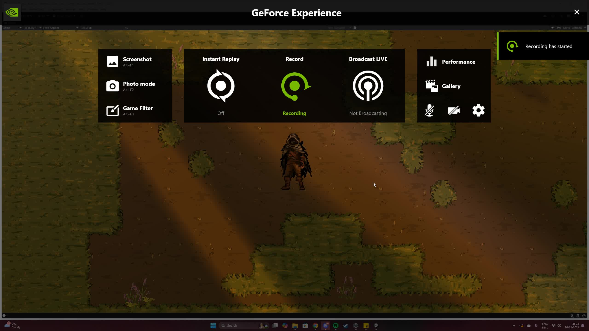
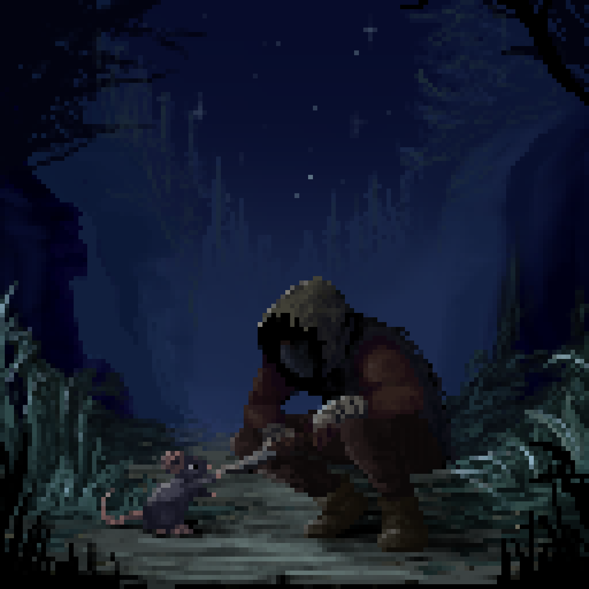
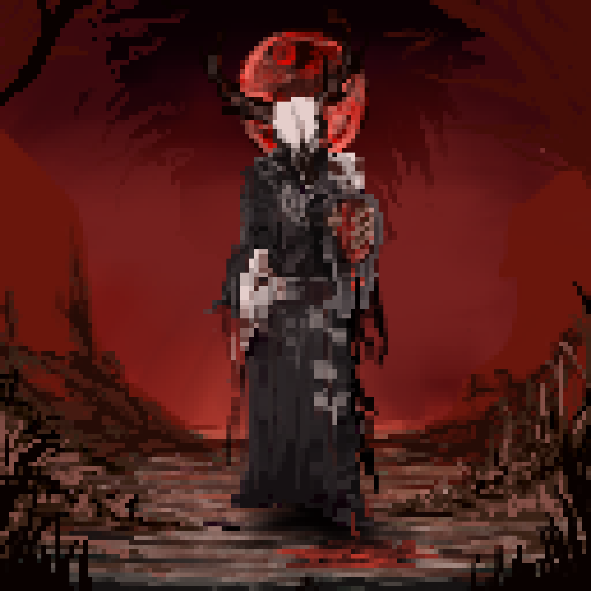
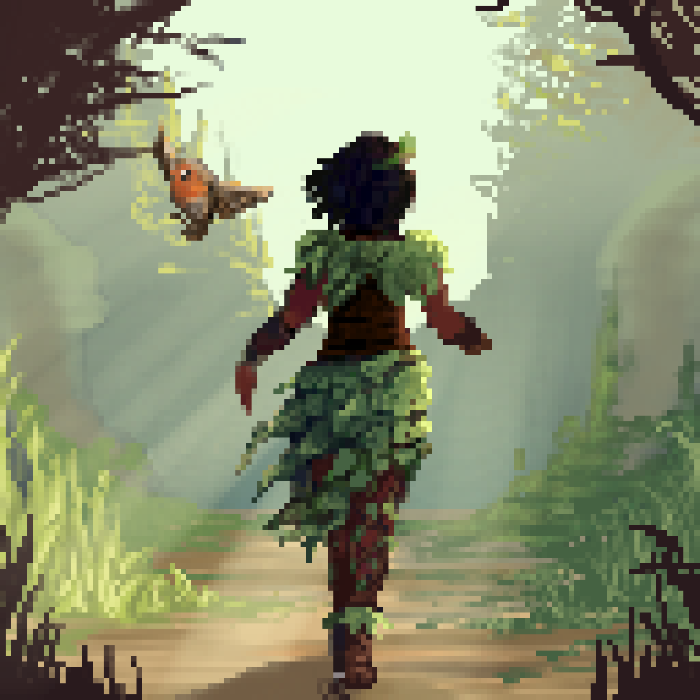
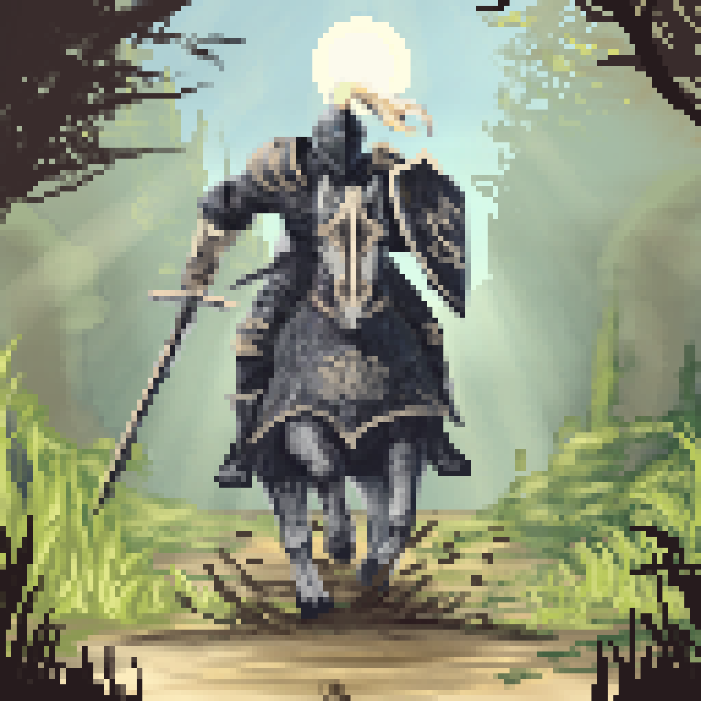
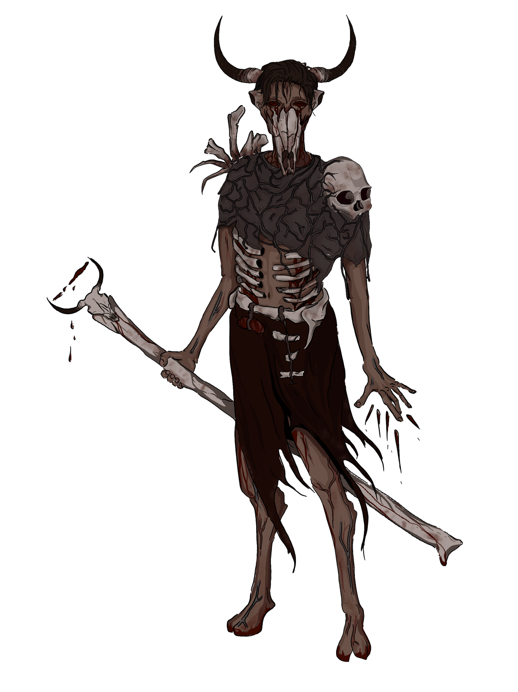

01 / OVERVIEW
Build a character.
Shape a story.
This long-term, collaborative RPG project is built around a simple design ambition: a player's starting identity should influence their experience without defining the limits of who they can become.
Different character backgrounds offer different introductions to a world affected by a mysterious spreading corruption. The wider vision explores how decisions, relationships and personal growth can shape a player's journey.
This case study intentionally shares selected design principles and development work rather than the full narrative or systems documentation.
02 / MY ROLE
Creative direction & collaboration
I lead the project's creative work, including narrative and world-building, character concepts, storyboarding, visual development, pixel-art assets and animation. I also develop the intended player experience and the concepts behind class and companion systems.
My brother is responsible for programming and technical implementation, including the systems that bring the game into a playable environment. We collaborate on translating creative ideas into feasible features.
03 / DESIGN THINKING
Identity is a starting point,
not a restriction.
The planned experience features five starting classes, each with its own context, opening and approach to the world. Starting roles are designed to create meaningful differences while allowing players to evolve beyond their initial identity.
Companions with a purpose
Each starting character is envisioned with a companion that develops alongside them. Companion concepts go beyond companionship: different abilities could open alternative approaches to exploration and problem-solving.
These interconnected progression and companion ideas are part of the project's ongoing design vision; they are not presented here as fully implemented systems.
04 / DEVELOPMENT PROTOTYPE
From design to a
playable space.
The existing prototype includes a navigable top-down environment, NPC dialogue interactions and experiments with 2D lighting. An enemy system is also implemented. My visual and animation work supports the technical development undertaken by my brother.

A video recording can be added here later if you decide you're comfortable sharing prototype footage publicly.
05 / VISUAL DEVELOPMENT
Five beginnings.
One evolving world.
Selected illustrations explore distinct class identities, while creature concepts and terrain assets establish the game's visual language. These are examples of the original artwork I created for the project.




From Sketch to Character
A look at my illustration process, from initial sketches and colour development to adapting a shared woodland environment for two contrasting character identities.
After establishing the composition and environment for the Rogue, I reused and adapted those foundations for the Thief. Adjusting the lighting, colour palette and character design allowed me to create a contrasting identity while maintaining visual consistency across the world.


02 / NARRATIVE ILLUSTRATION
Two Visual Languages
Pixel art forms the foundation of exploration and gameplay, while my original, more detailed illustration style is used for dialogue sequences and cutscenes.
This timelapse follows the Cultist character from early construction sketches through to the finished illustration.
06 / REFLECTION & NEXT STEPS
Designing for
possibility.
One of the central challenges is balancing player freedom with clear character identities and meaningful consequences. As development continues, the focus is on turning ambitious design ideas into systems that are understandable, practical and rewarding to play.
This is a long-term passion project in early development. The work shown here represents a selected snapshot of its design and visual exploration, not a promise that every proposed feature has been built.